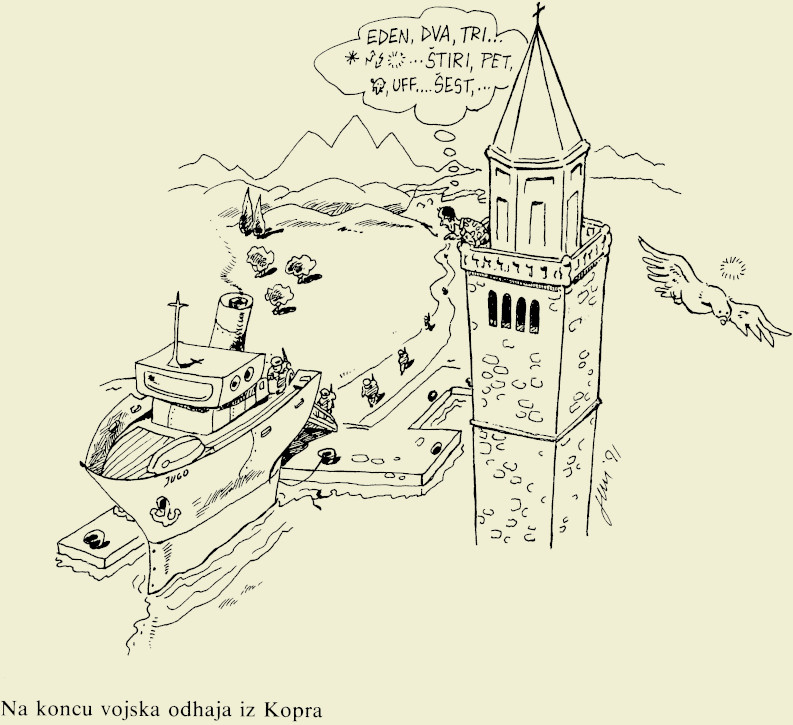

»Na naši zemlji ni več nobenih tujih vojakov. Svobodo in suverenost varujejo naše sile!«
generalmajor Janez Slapar na slovesnosti ob odhodu zadnjega vojaka JLA iz Slovenije
Po sklenitvi dogovora o prekinitvi ognja 3. julija 1991, je Jugoslovanska vojska prenehala z napadi, a je z nenajavljenimi preleti in snemanjem položajev teritorialne obrambe še naprej kršila premirje. Slovenske obrambne sile so zato v tem času izvajale poostren nadzor nad vojašnicami in gibanjem JLA. 7. julija 1991 so se predstavniki Republike Slovenije, Hrvaške in Jugoslavije skupaj z opazovalci Evropske skupnosti sestali na Brionih in se uspeli sporazumeti o rešitvi konflikta v Sloveniji.
Konferenco na Brionih je za vse vpletene strani 7. julija 1991 pripravila Evropska skupnost pod vodstvom pogajalca in tedanjega zunanjega ministra Nizozemske . Na slovenski strani so se jo udeležili predsednik Republike Slovenije Milan Kučan, predsednik izvršnega sveta (vlade) Lojze Peterle, zunanji minister dr. Dimitrij Rupel, predsednik skupščine dr. France Bučar in član predsedstva Jugoslavije Janez Drnovšek. Poleg slovenske delegacije so prišli na Brione tudi predstavniki Republike Hrvaške ter vodstvo federacije - predsednik vlade Ante Marković, notranji minister , zunanji minister in pomočnik obrambnega ministra ter člani predsedstva SFRJ brez predstavnikov Kosova in Vojvodine. Jugoslovanska stran je predstavnike Slovenije poskušala prepričati na preoblikovanje SFRJ, a je slovenska stran predloge za ohranjanje enotne države ostro zavračala.
Tiskovna konferenca v Cankarjevem domu po vrnitvi z Brionov
Po 15. urnih pogajanjih so predstavniki vseh vpletenih strani sprejeli Brionsko deklaracijo, ki je temeljila na predlogu Evropske skupnosti o takojšnjem premirju, umiku vojakov v vojašnice in odložitvi ukrepov osamosvajanja Republike Slovenije za tri mesece. Skupščina RS je predlog sprejela predvsem zaradi upravičenega strahu o morebitnem drugem, bolj agresivnem napadu JLA na državo.
Skupščina Republike Slovenije je 10. julija 1991 z več kot dvotretjinsko večino potrdila Brionsko deklaracijo.
Brionska deklaracija je na področju obrambe in varnosti med drugim določala, da se lahko narodi Jugoslavije sami in avtonomno odločajo o svoji prihodnosti; da se morajo vse strani vzdržati enostranskih ukrepov in se ne smejo posluževati nikakršnega nasilja; da bo Predsedstvo SFRJ prevzelo vse z ustavo določene pristojnosti pri vodenju države; da se bo oblikovala mednarodna opazovalna skupina za spremljanje sprejetih določil deklaracije in da morajo obe strani takoj izpustiti vojne ujetnike in druge zadržane osebe.
Evropska skupnost je po dogovoru na Brionih v Jugoslavijo poslala svoje opazovalce. Prva skupina je prišla v Slovenijo 15. julija 1991 in se nastanila na Brdu pri Kranju. Opazovalci so obiskovali slovenske vojašnice in opravljali informativne pogovore s pripadniki teritorialne obrambe, milice in oblasti.
Evropski opazovalci v Mariboru 19.7.1991
Memorandum o soglasju o opazovalni misiji
Poleg materialne škode je vojna povzročila tudi izgube človeških življenj, tako na jugoslovanski kot na slovenski strani. Podatke o žrtvah vojne za Slovenijo je po prenehanju bojev v juliju objavil Rdeči križ.
»Zakon o varstvu žrtev vojaške agresije«
Skupščina RS je avgusta 1991 sprejela Zakon o varstvu žrtev vojaške agresije na Republiko Slovenijo v letu 1991. Z njim je dobila skrb za vse ljudi, ki so bili v vojni ranjeni in poškodovani zakonsko podlago.
Po prenehanju spopadov in sprejetem dogovoru na Brionih je vodstvo teritorialne obrambe 17. julija izvedlo demobilizacijo.
Pomemben del pogajanj na Brionih so bili pogovori o umiku pripadnikov JLA z ozemlja Slovenije. Predsedstvo SFRJ je tako 18. julija 1991 sprejelo sklep o umiku enot JLA, ki je bil predviden v roku treh mesecev. Vodstvo je tako najprej začelo s koncentracijo vseh vojaških sredstev na zbirnih mestih, sledil pa naj bi transport po železnici v Bosno in Hercegovino ter na Hrvaško.
Odhajanje JLA iz Slovenije
Ker je bil umik vojske z vlaki prepočasen, se je JLA odločila še za odhod po morski poti. Zaradi tega je morala kljub temu, da si je prizadevala odpeljati čim več sredstev, del tehnike pustiti v Sloveniji. Priprave JLA na odhod so spremljale slovenske obrambne sile, vendar večjih incidentov ni bilo. Zadnji vojaški konvoj in s tem pripadnik JLA je slovensko ozemlje zapustil na malteškem trajektu Venus, 26. oktobra 1991, malo po polnoči.

Na koncu vojska odhaja iz Kopra
Slovesnost ob odhodu zadnjega vojaka JLA iz Kopra
Razlogi za zmago slovenskih obrambnih sil
Kljub veliki prednosti jugoslovanske vojske v opremi in tehniki je imela Republika Slovenija v času vojne številčno premoč. Za slovensko stran sta se kot izjemno pomembni komponenti izkazali legitimnost in legalnost uporabe sile, od česar je bila odvisna tudi podpora javnosti. Uporaba sile na slovenski strani je bila prepoznana kot obrambna vojna, s katero je bilo potrebno zaščititi jasno izraženo voljo slovenskega naroda. Vodstvu je uspelo s skupnim delovanjem povsem poenotiti slovenski narod in si zagotoviti podporo pri delovanju slovenskih obrambnih sil. S tem je bila zagotovljena izjemno visoka bojna morala med pripadniki TO in milico, urejena pa so bila tudi številna logistična vprašanja, ki jih obrambni sistem sam ne bi bil sposoben rešiti.
Pomembno vlogo je imela tudi poveljniška struktura, ki je pripravila dobre strateške in taktične načrte. Z njim so bile povečane možnosti za zmago in zmanjšane nepotrebne žrtve. Zaradi ukrepov slovenskega vojaškega vrha in geografskih značilnosti slovenskega ozemlja tako jugoslovanska premoč v vojaški tehniki ni prišla do izraza. Enote JLA so ostale blokirane v vojašnicah in na barikadah.
Izrednega pomena je bilo skupno nastopanje TO in slovenske milice, s čimer se je obrambna zmogljivost izjemno povečala. Po zaslugi milice je bila vzpostavljena dobra obveščevalna mreža in s tem povečana odzivnost in mobilnost slovenskih obrambnih sil. Pri razlogih za poraz JLA pa ne smemo tudi mimo odkritega podcenjevanja slovenskih obrambnih zmožnosti s strani jugoslovanske vojske.
Slovenija je z jasno strukturo vodenja in poveljevanja ter sodelovanjem na vseh ravneh mednarodni skupnosti predstavila svojo politična zrelost. Slovenska vojna za obrambo neodvisnosti ostaja edini proces v razpadu Jugoslavije, ki ga ni bilo potrebno braniti na na tleh nekdanje Jugoslavije v Haagu.
Akt o imenovanju delegacije
Skupščina Republike Slovenije je 31. julija 1991 imenovala delegacijo za pogajanja o razdružitvi Jugoslavije.
Evropska skupnost (ES) je od začetka konflikta v Sloveniji budno spremljala vse bolj zaskrbljujoče razmere v Jugoslaviji. Po podpisu dogovora na Brionih se je zato zavzela za mirno reševanje sporov, republikam, ki so zavračale podpis premirja pa je zagrozila z gospodarskimi sankcijami, pri čemer so jo podprle tudi ZDA. V Beogradu so tako 2. septembra 1991 predsedniki jugoslovanskih republik in predsednik Predsedstva Jugoslavije podpisali sporazum o premirju in razširitvi opazovalne misije na območje Hrvaške, ES pa je na podlagi avgusta sprejete deklaracije o Jugoslaviji sklicala mirovno konferenco v Haagu. Slednja je začela delovati 7. septembra pod predsedstvom lorda , udeležili pa so se jo vsi predstavniki jugoslovanskih republik, federacije in vseh držav članic Evropske skupnosti. V njenem okvirju pa je bila ustanovljena tudi arbitražna komisija o izpolnjevanju pogojev za mednarodno priznanje novonastalih držav.
Stališča Skupščine RS ob izteku 3 mesečnega moratorija
Skupščina Republike Slovenije je 2. oktobra 1991 sprejela Stališča in sklepe ob izteku trimesečnega moratorija. Ugotovila je, da so z iztekom moratorija prenehale vse obveznosti Slovenije določene z brionsko deklaracijo, zato je zveznim organom odvzela vse pristojnosti nad Slovenijo in 7. oktobra prevzela nadzor nad državno mejo.
Skupščina Republike Slovenije je 8. oktobra 1991, še pred odhodom jugoslovanske vojske sprejela Zakon o denarni enoti Republike Slovenije, naslednji dan pa so bili v obtok kot začasna valuta uvedeni vrednostni boni.